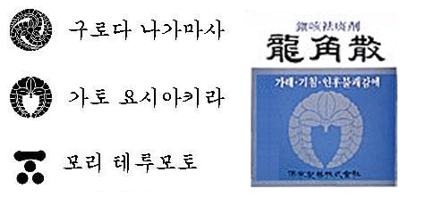

용각산이 포장된 박스에 새겨진 문양이 일본 가토 요시아키라 가문의 문장과 동일하다는 제보와 그에 대한 답변.-----
용각산은 일본에선 류-카쿠산이라고 합니다.-일본인 집사람왈...
200년 전에 만들었고요. 아키타현의 번주 당시는 사타케씨 집안이 번주였습니다.
그 번주의 집안 대대로 전해저 내료온 약입니다.*용각산 홈페이지에 연혁이 있었슴.
그렇다면 동시대 유명한 무장 사타케가문의 약에 무장 카토가문의 이 그려져 있는걸까...?
그건...그건...숙제...!!!!죄송합니다.
저도 님의 글을 읽고 흥미가 있어서 찾아봤지만..약의 시작은 사타케 가문이지만,...
문양은 가토 가문이니...나 이것참.. 역사엔 그리 관심이 없어서.
하지만, 글을 읽다보니. 이런저런 글을 읽다보니.토쿠가와 이에야스 아래에서 같은 편이기도 하고,?ヶ原の?い세키가하라 전쟁에서....서로가 대립하는거 같은데...하여튼 동시대 같이 활동한 무장의 가문이니..무슨 인연이 있긴 하네요.여기까지.!죄송
참고로 용각산에 반투명 뚜껑에 쬐그만 숟가락 있잖아요..
일본도 똑같답니다.한국,대만,미국등지로 수출하고 있다네요...
-----
용각산에 그려진 가문은 후지문이라고 해서 후지와라씨의 가문입니다.
후지문은 후지와라씨에서 나온 여러 성씨들이 사용했는데, 가토 키요마사도 후지와라씨족이기 때문에 후지문을 사용한 것입니다.
용각산은 사타케 가문의 의사가 만들었는데, 사타케 가문은 부채에 태양이 있는 것이 가문으로 후지문과 관계가 없으며, 용각산을 만든 의사의 성이 후지이로 후지와라씨 일족입니다.
후지이 가문이 후지문을 사용했기때문에 용각산에도 후지문을 사용한 것입니다.
(원문 출처: 네이버 지식인 "일본 옛 어느 가문의 문장과 용각산 케이스에 그려진 그림이 같은 이유?? "
http://kin.naver.com/detail/detail.php?d1id=6&dir_id=61402&eid=kQo/raA+Arb2mnKMPGRwkkiSyrfa+xtU&qb=7Jqp6rCB7IKw&enc=utf8)